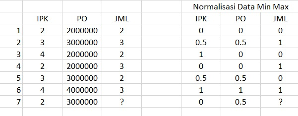
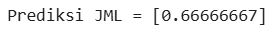

Tugas_Perhitungan_WKNN#
1. Missing Value dengan WKNN (Perhitungan Manual)#

Data ke-7 memiliki nilai JML yang hilang. Metode yang digunakan adalah Weighted K-Nearest Neighbor (WKNN). Prinsipnya: Hitung jarak data ke-7 dengan data lain Ambil k tetangga terdekat Hitung bobot berdasarkan jarak Hitung nilai prediksi Rumus jarak menggunakan Euclidean Distance: $\( d(x,y) = \sqrt{\sum_{i=1}^{n}(x_i - y_i)^2} \)$
1.1 Menghitung Jarak#
Data ke-7 = (IPK=0 , PO=0.5) Jarak ke Data 1 (0,0)
Jarak ke Data 2 (0.5,0.5)
Jarak ke Data 3 (0,1)
Jarak ke Data 4 (0,0)
Jarak ke Data 5 (0.5,0.5)
Jarak ke Data 6 (1,1)
1.2 Urutan Jarak Terdekat#
Data |
Jarak |
JML |
|---|---|---|
1 |
0.5 |
0 |
2 |
0.5 |
1 |
4 |
0.5 |
1 |
5 |
0.5 |
0 |
3 |
1.118 |
0 |
6 |
1.118 |
1 |
Misal k = 3 Tetangga terdekat:
Data |
JML |
|---|---|
1 |
0 |
2 |
1 |
4 |
1 |
1.3 Menghitung Bobot#
Rumus bobot: $\( w_i = \frac{1}{d_i} \)\( Karena jarak semua 0.5 \)\( w = \frac{1}{0.5}=2 \)$
1.4 Menghitung Prediksi WKNN#
Rumus: $\( y = \frac{\sum w_i y_i}{\sum w_i} \)\( Substitusi: \)\( y = \frac{2(0)+2(1)+2(1)}{2+2+2} \)\( \)\( y = \frac{4}{6} \)\( \)\( y = {0.67} \)$
Karena JML berupa kategori (0 atau 1) maka: JML = 1
✅ Hasil Missing Value
IPK |
PO |
JML |
|---|---|---|
0 |
0.5 |
1 |
2. Code Python Menghitung WKNN#
import numpy as np
from sklearn.neighbors import KNeighborsRegressor
# data normalisasi
X = np.array([
[0,0],
[0.5,0.5],
[1,0],
[0,0],
[0.5,0.5],
[1,1]
])
y = np.array([0,1,0,1,0,1])
# data yang missing
X_test = np.array([[0,0.5]])
model = KNeighborsRegressor(n_neighbors=3, weights='distance')
model.fit(X,y)
pred = model.predict(X_test)
print("Prediksi JML =",pred)
Output:

Dibulatkan: JML = 1